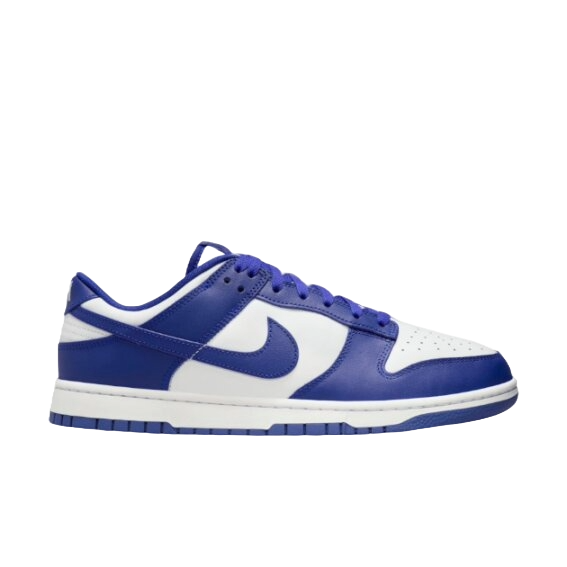

DUNK
Lançado originalmente nos anos 80

Você selecionou o Tênis DUNK
A linha Dunk vai muito além de um tênis casual
porque é produzida com materiais sintéticos de altíssima qualidade,
como o couro e a camurça, presentes no cabedal. Isso pode variar de acordo com o modelo,
a edição e colaboração!